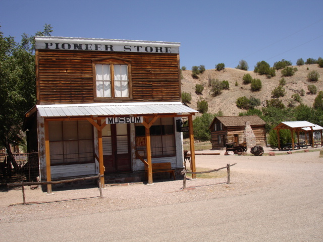
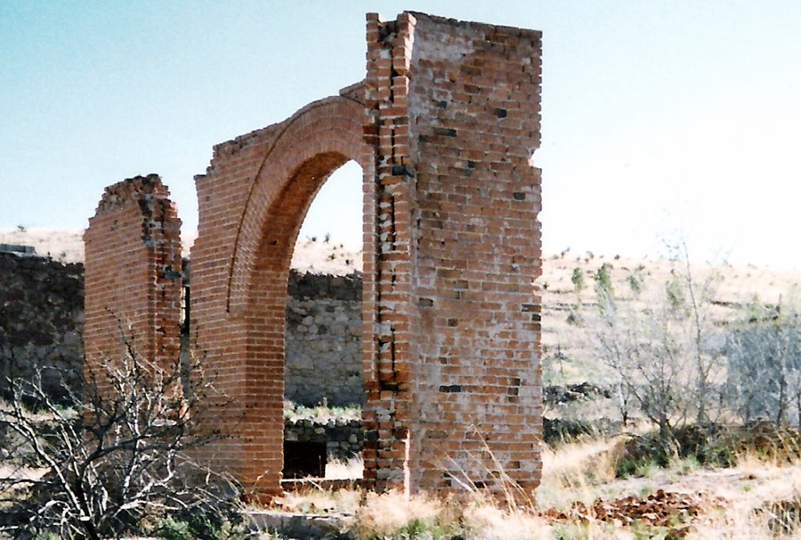

|
Thursday, November 26, 2026 · T or C · Elephant Butte · Hillsboro · Arrey · Sierra County
Hey neighbors. Happy Thanksgiving, and welcome to week four of Hot Springs Weekly. It's free, it takes about five minutes, and it's all about what's going on right here in Sierra County. The lake is up 26 feet and the ramps are open again, trash will be picked up at 6:30 a.m., Small Business Saturday is this weekend, and we've got last week's Treasure Hunt answer.
Pass it along to a neighbor: share this page
Get it free every Thursday
Local news
The lake is up 26 feet, and the ramps are open again
Elephant Butte Reservoir stood at 4,322.00 feet on Tuesday, Nov 24, holding 276,679 acre-feet. That's a provisional Bureau of Reclamation reading. On Oct 16 the lake sat at 4,296.00 feet and 94,891 acre-feet. In a little over a month, the water has risen 26 feet, and storage has nearly tripled. Inflow on Nov 24 was running about 3,019 cubic feet per second, with almost no water being released (8 cfs). (Bureau of Reclamation 40-day data)
State Parks puts it plainly: "With lake levels having risen substantially, the Marina Del Sur and Rock Canyon boat ramps are now accessible, and four-wheel drive is no longer required for launching or loading vessels." The same notice warns that submerged debris and other hazards may still be out there, and that launching is at your own risk. South Monticello was still listed as closed due to low water as of Wednesday, Nov 25, so call ahead before you trailer out there. Day-use hours are 6 a.m. to 9 p.m. Park: 575-744-5923. (Elephant Butte Lake State Park alerts)
The Long Point area stays closed through the winter and is scheduled to reopen March 1, 2027. The park says the closure follows vandalism, illegal dumping, and hunting outside designated areas. Upper Ridge Road and Rock Canyon comfort stations remain closed through Feb 28, 2027. The Cliffs Area is still closed indefinitely. (Same park alerts)
Around town
- Trash pickup at 6:30 a.m. Trash will be picked up at 6:30 a.m. Have your cart out before then. (City alerts)
- Holiday hours: Sierra County offices closed at noon Wednesday, Nov 25, and stay closed today and Friday, Nov 27. (County 2026 holiday calendar) City Hall and library holiday hours weren't posted as of Wednesday, so call ahead: 575-894-6673.
- Thanksgiving Day potluck: T or C Brewing, 410 N. Broadway, hosts its yearly community potluck today. Doors open at 1 p.m. and the meal starts at 2. The brewery supplies the turkey, mashed potatoes and gravy; bring a dish to share. Admission is a $5 donation to the Matthew 25 Food Pantry. (Event listing)
- Toys for Tots sign-ups are still open. The program serves children of all ages and income levels, plus adults over 18 with a developmental or cognitive disability. Families register by scanning the QR code on the sign-up flyer. Questions: Charis Baxter, program director at The Club, 575-888-0174. (TCMSD post)
T or C City Commission
- Nov 18 minutes still aren't posted. That meeting included a $7.5 million waterline contract, water bonds, a sewer design contract, a solar grant, a police equipment loan and other items. Until the official record is up, we don't have the votes. The next regular meeting isn't posted yet. (City agendas)
- EV charging on McAdoo: the city's public information page on Facebook said Tuesday, Nov 24, that the charging station was estimated to open "within the week." (City PIO on Facebook)
Elephant Butte City Council
- New fire code and fireworks rules are in effect. The council adopted Ordinance 231 (the 2021 International Fire Code with New Mexico changes) and Ordinance 232 (prohibited fireworks acts and penalties) on Nov 18. Ordinance 232 took effect Monday, Nov 23. Read the full text at City Hall, 103 Water Ave., 8 a.m. to noon and 1 to 5 p.m. weekdays, or on the city website. (Ordinance 232 notice · Ordinance 231 notice)
- Zoning hearing, Tuesday, Dec 1, 10 a.m., City Hall, 103 Water Ave.: MC Stag Grips, LLC has applied for a home-occupation business registration at 556 Lakeshore Drive. (City notice)
Sierra County Commission
- Special meeting Tuesday, Dec 1, 10 a.m., Commission Chambers, 1712 N. Date St. Public comment on off-highway vehicles is on the agenda, plus general comment, limited to 3 minutes. Written comments on the county's revised resolution for recreational off-highway vehicles on parts of NM 51, 179, 181 and 195 are due Monday, Nov 30, by 5 p.m., to County Manager Amber Vaughn, avaughn@sierraco.org. The meeting will also be streamed on the county's Facebook page and YouTube channel. (Amended agenda · County agendas)
- Also on the agenda, not yet decided: Resolution 2026-76, a request for a separate off-highway vehicle speed limit on certain state highway segments and an amendment to state policy CP-71; a proposal to publish Ordinance 2026-005 on data centers, cryptocurrency mining, agricultural land and aviation safety; and road-closure requests from the New Mexico Spaceport Authority for December 2026 and January 2027. (Same agenda)
- Screwworm update: as of the Nov 11 county notice, Sierra County had two confirmed cases, one in a horse and one in a dog. If you're hauling animals, the county has posted movement and treatment rules. Suspect a case? Call your vet or the New Mexico Livestock Board at 505-841-6161 (after hours, 1-800-525-2782). (County news)
Schools
- A life-saving award: T or C Municipal Schools says School Safety Director Erica Baker received the New Mexico State Parks Life Saving Award for rescuing stranded jet skiers during a storm at Elephant Butte Lake. (T or C Schools on Facebook)
- Cookies for a Cause is still going: bring a non-perishable food item to a school cafeteria for a cookie. Donations go to a local food bank, and the last day is Dec 17. (TCMSD post)
- Career Fair presenters wanted: T or C schools want local workers to show students what they do at the Feb 19, 2027 Career Fair, 8:30 a.m. to 2:30 p.m., 1500 N. Silver St. Bring your tools of the trade. RSVP by Jan 15 to kselberg@torcschools.net or sforrister@torcschools.net. (TCMSD)
Local papers (headlines only)
Source: Sierra County Sentinel
Volleyball
- State runner-up after 33 years: the Lady Tigers finished as Class 3A state runner-up on Saturday, Nov 14, at the Rio Rancho Event Center, the program's first state championship match since 1993. They finished 23-4 and 6-0 in district. (Midnight Horizons Sports)
Football
- Season ends in the second round: Tiger football's year ended Saturday, Nov 14, at Hope Christian in Albuquerque, a week after the 34-7 first-round win at West Las Vegas. (Midnight Horizons Sports)
Report it
Spot a problem around T or C? Here's who to call.
Water leak, water or sewer problem: call the Daupler line at (575) 223-1930, or the Water Office at (575) 894-7331.
Streets, parks, sanitation: use the city's Report an Issue page.
- Animal control, code enforcement, electric: Dispatch, (575) 894-7111.
- Outage alerts: call the Water Department to update your phone number so Daupler can reach you. (Water Watch)
Out at the Spaceport
- A flight-test corridor toward Texas: Spaceport America, Midland, and the aircraft company Starfighters Space announced Nov 18 that they've signed a letter of intent to work toward a high-speed flight test corridor of about 250 nautical miles between Spaceport America and Midland's spaceport. A letter of intent is a first step; it doesn't commit any money. (Spaceport America)
- Road closures on the county agenda: the Dec 1 commission agenda includes road-closure requests from the New Mexico Spaceport Authority for December 2026 and January 2027. The agenda doesn't name the roads. (Amended agenda)
- Tours: Saturdays at 9 a.m. from the Geronimo Trail Visitor Center, 523 N. Broadway. (Book here)
5 jobs hiring this week
Five openings around the county. Pay is listed only where the posting shows it.
- Administrative Assistant, Public Works Department, City of T or C. Posted Nov 20. Open until filled. (City careers)
- Golf Course Maintenance Technician I, City of T or C. Posted Nov 20. Open until filled. (City careers)
- Sanitation Collector/Driver, City of T or C. Open until filled. (City careers)
- Apprentice Lineman, Electric Department, City of T or C. Open until filled. Applications can be dropped off at Human Resources or emailed to humanresources@torcnm.gov. (City careers)
- Barista (part time), Sierra Vista Hospital, T or C. Contact Human Resources at 575-743-1274, or email a completed application and resume to hr@svhnm.org. (SVH careers)
Hiring? Send us your opening and we'll consider it for next week.
Lake levels and fishing
- Elephant Butte: the Bureau of Reclamation lists the lake at 4,322.00 feet on Nov 24, holding 276,679 acre-feet, up 26 feet since Oct 16. State Parks says the main ramp at Marina Del Sur and the Rock Canyon ramp are open, and four-wheel drive is no longer required. South Monticello is still listed as closed. Watch for submerged debris. Park: 575-744-5923. (USBR · State Parks)
- Caballo: the Bureau of Reclamation lists 4,139.28 feet and 26,464 acre-feet on Nov 24. West ramp open, east ramp closed. Game & Fish says water levels are changing after recent Rio Grande flooding, so use caution in low-water areas. Park: 575-743-3942. (USBR · State Parks)
- Fishing: Game & Fish's Nov 19 report has no new angler reports for Elephant Butte. It notes the open ramps and underwater hazards there, and changing water at Caballo. Caught something? Tell us. (Game & Fish, Nov 19)
Weather, burn rules and roads
- Weather around T or C: a mostly sunny Thanksgiving, with a high near 59 and a low around 35. Friday is sunny, high near 64. Saturday is sunny and about 73, with west winds 8 to 13 mph and gusts as high as 22 mph. Sunday is sunny, high near 63. No weather alerts as of Wednesday afternoon, Nov 25. (NWS forecast)
- Burn rules: no forest-wide fire restriction is posted on the Gila National Forest alerts page. (Gila NF alerts)
- Morgan Street: Wednesday’s closure at 476 Morgan St. was for a sewer tap, and that closure is now past.
- Silver Street and 9th Avenue were closed 7 a.m. to 5 p.m. Tuesday and Wednesday, Nov 24 and 25, while a crane set the new valve vault lid for the WSPI-1 water project and crews paved open-trench crossings. A later cut-and-cap of the existing waterline at that intersection is still listed with no date. (Same city alerts)
- Still closed, with no end date posted: Main Street from Clancy to McAdoo, and McAdoo from Clancy to Daniels, for the Shovel Ready Infrastructure Project. (Same city alerts)
- I-25: NMDOT's pavement work between mile markers 75.5 and 85 near Williamsburg continues, with lane closures as needed in both directions. (NMDOT project page · NMRoads)
This weekend
- Small Business Saturday, Saturday, Nov 28. MainStreet T or C, the T or C & Sierra County Chamber of Commerce, and MRGEDA are asking people to shop at locally owned Sierra County businesses. Every $20 spent that day gets you a raffle ticket for local gift cards. Multiple receipts can be combined. Bring them to the table near the entrance of T or C Brewing, 410 N. Broadway, from noon to 8 p.m. Saturday, or email a photo with the date visible, plus your name and phone number, to director@torcmainstreet.org by 11:59 p.m. Sunday, Nov 29. Purchases count even if the shop isn't on a "participating" list, as long as it's a Sierra County locally owned small business. (MainStreet T or C)
- Elephant Butte Fine Arts and Crafts Show, Saturday, Nov 28, 9 a.m. to 4 p.m., free, at two spots: the Elephant Butte RV Resort Events Center, 402 Butte Blvd., and Bigfoot Wine Patio, 212 Warm Springs Blvd. Raffle sales benefit Sierra County Cancer Assistance. (Details)
- Hillsboro Farm Market, Saturday, Nov 28, 9 a.m. (Sierra County tourism calendar)
- Music: Tif & Mollie play T or C Brewing, 410 N. Broadway, Friday, Nov 27, 6 to 9 p.m., no cover (event listing). On Sunday, Nov 29, the Four Bridges String Quartet is at Grapes / 405 Galleries, 407-409 Main St., at 1 p.m. Admission is $15, or $10 for Arts Council members. (Sierra County Arts Council)
Coming up later (not this weekend)
- Mon Nov 30: written comments on the county's revised off-highway vehicle resolution are due by 5 p.m. You can also comment in person at Tuesday's 10 a.m. special meeting.
- Tue Dec 1, 10 a.m.: Elephant Butte Zoning Commission public hearing at City Hall, 103 Water Ave., on a home-occupation registration for MC Stag Grips, LLC, at 556 Lakeshore Dr. (City notice)
- Thu Dec 10: Pesticide Applicators Workshop, 8:30 a.m., 2953 S. Broadway, $20 for 5 credits. RSVP by Dec 8 at 575-894-2375. (County post)
- Fri Dec 11: Old-Fashioned Christmas downtown, 6 to 9 p.m. The tree lighting is at 6 p.m. at Evelyn Renfro Park. The Parade of Lights starts at 6:30. This year, Santa will be on Foch Street in front of the Lee Belle Johnson Building, next to the city Christmas tree, not at Healing Waters Plaza. Vendors will be at the plaza, and burn barrels will be set up along Broadway and Main. Parade sign-up: tinyurl.com/2026-Parade-Registration. Questions: director@torcmainstreet.org. (MainStreet T or C)
- Sat Dec 12: the 31st annual Luminaria Beachwalk at Elephant Butte Lake State Park, 5 to 9 p.m. The park calendar lists 3,000 luminarias, 25 bonfire sites, a lighted boat parade, and free hot chocolate, cookies, and chile. Donations go toward the Fourth of July fireworks. Regular park entrance fees apply. Questions or sign-up: Maribel Jimenez, maribel.jimenez@emnrd.nm.gov or 575-744-5923, ext. 1003. (New Mexico State Parks calendar)
Gas prices around town
These are current pump numbers, not a news story.
- T or C, regular: $3.399 a gallon at Love's, 224 Dr Hubble Rd (I-25 exit 79), as of Wednesday, Nov 25. Diesel: $5.489. (Love's)
- Statewide: AAA puts New Mexico's average for regular at $3.42 as of Wednesday, Nov 25, down from $3.58 a week ago. (AAA New Mexico averages)
Police and sheriff blotter
T or C Police post their monthly numbers early each month. November's should come in early December, and we'll run them then.
Neither the T or C Police nor the Sierra County Sheriff's Office, which also covers Elephant Butte and Williamsburg, posted arrest news we could find this week. That's a gap in the records, not a claim that nothing happened.
County emergency alerts: text SIERRACO to 80946.
Lost, found and looking for a home
Adoptable pet of the week: Ozzy. He's a young Staffordshire Bull Terrier / Boxer mix at Desert Haven Animal Rescue (Sierra County Humane Society) in Williamsburg. His page says he's housetrained, already has basic training, is cautious with new people, and gets along well with other dogs. He's neutered, microchipped and up to date on shots. Adoption fee: $75. Desert Haven, 15576 NM-187, Williamsburg · (575) 740-0643 · Ozzy's page
Lost or found a pet? Reply and we'll run it free.
Free help for local families
We give these spots away free to local folks who help kids and families. Nobody paid to be here.
- The Olive Tree. Free mental health and substance-use help for Sierra County residents of all ages, including people without insurance, plus creative arts and wellness classes and support for people coming out of incarceration. 808 Fir St., T or C · (575) 208-4045 · olivetreenm.org
- Little Things Matter (AppleTree Educational Center). Free home visits from pregnancy up to age 3, with help on development, car seats and breastfeeding, plus a dads' group. English and Spanish. (575) 894-5646
- Aprendamos Early Intervention. Worried your baby or toddler is behind on talking or walking? Free help for kids from birth to 3, mostly at home. (575) 526-6682 · info@aitkids.com
- T or C Schools Family Resource Center. Short on supplies, clothes or other basics for your T or C students? Start here. (575) 894-8166
- Matthew 25 Food Pantry. Free groceries every Thursday, 9 to 11 a.m., at 405 Austin St. No ID needed. torcmatthew25foodpantry@gmail.com
Neighbors of the Week
Know a neighbor who went above and beyond this week? The guy who fixes everybody's swamp cooler, the lady who feeds the strays, the coach who never misses a practice? Reply with their name and why, and they could be next week's Neighbor of the Week.
Photo of the Week
Send us your best shot from around the county: sunsets over the Butte, the river, the Caballos, your dog at the hot springs. Real photos only, from you. We'll credit you by name. Reply with the photo and where you took it.
Entrepreneur Spotlight
Got a business or an idea you're building in Sierra County? We'll feature one local entrepreneur a week: what you do, why you started, and what you need. It's $15 per issue, and the first few are free. You'll get a signed agreement that your idea stays yours. Call or text 575-740-3555.
Sierra County Treasure Hunt
Last week we asked where in Sierra County that photo was. It's the Pioneer Store Museum in Chloride, built in 1880. The photo shows the front porch: orange-brown posts, curtained windows, double doors, a bench and a rail fence.
We'll print the names of everyone who got it right in next week's issue.

Here's the original photo, public domain, via the National Archives and Wikimedia Commons.
This week's hunt: where in Sierra County is this? Here's a hint: these brick walls once held the county seat.

Reply with your guess, and your first name if you'd like it printed. We'll reveal the answer next week and print the names of everyone who got it right. Photo: National Archives and Records Administration, public domain, via Wikimedia Commons; we'll link the original next week.
Above the Hot Springs
What's up in our sky, Nov 26 to Dec 3.
- After the supermoon: the full supermoon was Tuesday, Nov 24, and the moon is waning this week. NASA says the next one is Dec 24 (1:28 a.m. UTC, or 6:28 p.m. our time on Wednesday, Dec 23). (NASA)
- In the evening: look south after sunset for Saturn. Later at night, Jupiter and Mars rise in the east.
- Before sunrise: bright Venus is the morning star, low in the east-southeast.
- Sunset in T or C: about 5:03 p.m. today, Thursday, Nov 26, and about 5:02 p.m. by Thursday, Dec 3.
Did you know?
Elephant Butte itself is an old volcanic plug: the sides of the volcano wore away and left the solidified core, which people have long said looks like an elephant lying on its side. It's an island in the lake except at low water, when a strip of land connects it to the shore. (Wikipedia, citing the Albuquerque Journal)
Sponsor Hot Springs Weekly
Want your business in front of your neighbors every week? Founding sponsors get the first 2 months free, then $25 a month, locked in. Call or text 575-740-3555.
Get Hot Springs Weekly in your inbox, free.
Or subscribe at hotspringsweekly.beehiiv.com/subscribe.
Got a tip, an event or a correction? Just reply. · Forward this to a neighbor, or they can subscribe free at hotspringsweekly.beehiiv.com/subscribe.
Hot Springs Weekly is a personal, independent project. It is not affiliated with, endorsed by, or representative of the City of Truth or Consequences. City information comes from public records and official city notices.
|